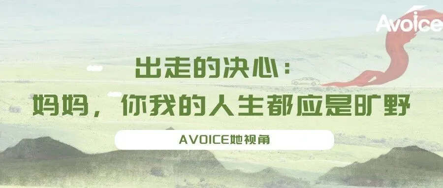
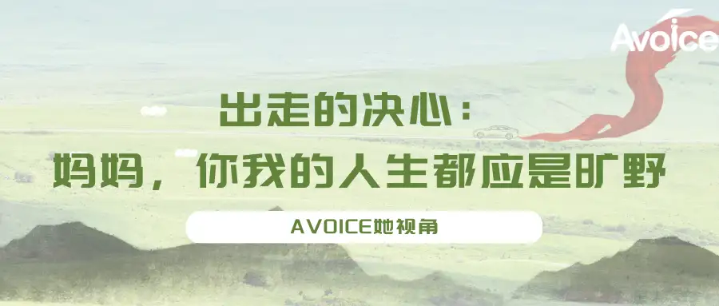
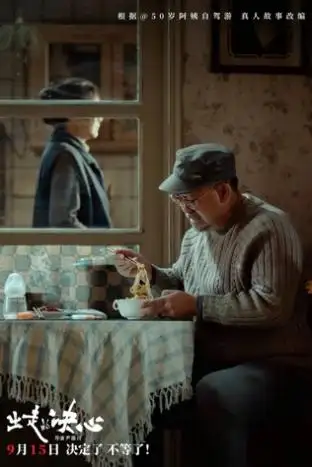
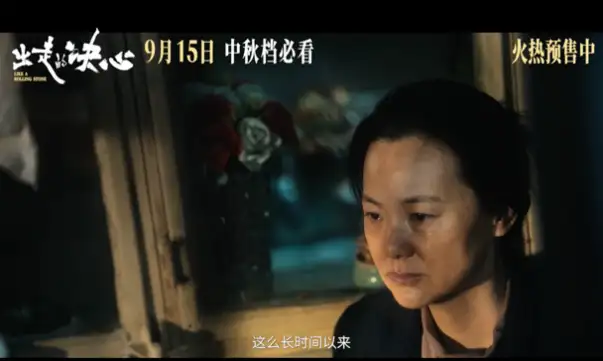
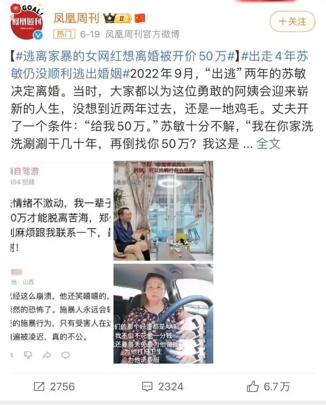
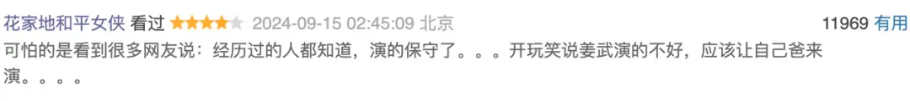
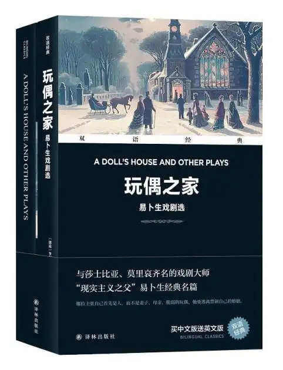
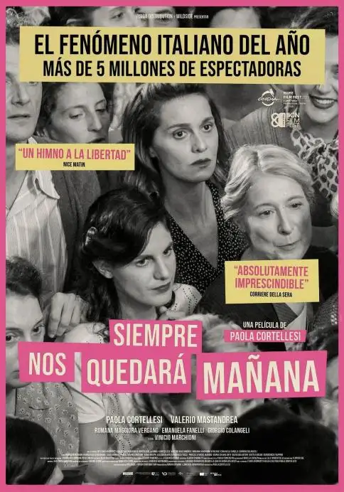

内容概述
李红今年50岁。已婚。唯一的女儿结了婚，生了两个孙子。一家人住在郑州的平房里。与许多女孩一样，18岁的李红曾有过许多梦想…18岁时的大学梦，25岁时的爱情梦，还有那个从未实现的云游四海梦。在日复一日的家庭劳动中，她的梦想不断的为了“那些对别人来说更重要的事”而拖延，接着被埋没、忘却…直到，50岁！她决心不再等下去了。随即考了驾照，一人一车，从此一脚油门驶向了自己的新天地。
影片根据抖音热点人物“50岁阿姨自驾游”苏敏女士的真实故事改编。李红/苏敏的故事映照着中国千千万万家庭的现状。这是社会中大家心知肚明，但鲜少公开讨论的故事…
父权制，母职与家庭劳动
“他们说这是爱。我们说这是无偿工作……
神经症、自杀、性冷淡: 家庭主妇的职业病。”
——西莉维亚·费德里奇，1974年

（豆瓣《出走的决心》剧照）
影片通过空间的设置视觉化了李红和孙大勇在家庭中扮演的角色对比。通过空间的设置将孙大勇与李红隔开。李红做家务忙碌的身影对比孙大勇静态的端坐。孙大勇唯二发出的声响是埋汰李红的碎嘴子和自娱自乐打乒乓球的啪嗒声，和李红在厨房里的铛铛铛的菜刀声和洗手间里滴答的水声交相呼应。
除此之外，导演还通过老式家属房阳台铁栅栏的光影，使其落在人物，特别是李红汗津津的脸上，强调“家庭”的“私人属性”，如同牢笼一样困着李红做着日复一日的家庭劳动。

（豆瓣《出走的决心》剧照）
即使影片中李红并非在经济上完全依赖孙大勇，李红显然比孙大勇承担了更多的劳动，而这却被孙大勇视为理所当然且不重要的。影片中孙大勇一度没由来地质问李红“你图什么”，这让许多观众摸不着头脑，但其实这是孙大勇通过质问贬低李红的干活量和动机，贬低家务本身的价值和家务主要工作者李红在家中的地位，合理化他的坐享其成。荒谬的是，这么“不重要的”劳动，在李红几次“罢工”之后，明显对整个家庭的运转都造成了巨大的问题：孙子没人带，女儿女婿无法正常工作，孙大勇没时间钓鱼打球…
现实中，苏敏女士除了遭受丈夫的日常贬低责备之外，还常年遭受家暴。电影中，孙大勇甚至没有“过分”的比如家暴这样的举止，只是“不细心”，“不体贴”和“抠”而已，这让许多观众觉得导演此处的处理太过保守。许多观众甚至表示，孙大勇这样的算是“好男人”，现实中自己的父亲/丈夫更加可恶。然而这样的处理却强调了李红看似“没由来”的，其实由日复一日操劳却被贬低的家庭劳动造成的抑郁。这种情况下，即使孙大勇什么都没做，他默许了父权制在私人家庭中对女性的劳动和生育剥削，成了既得利益者。

（新浪微博自截图）

（豆瓣评论截图）
恩格斯在《家庭、 私有制和国家的起源》中提到，婚姻与女性家庭劳动是维护私有制延续的重要机制。资本主义社会中，父权制为了延续私有财产到下一代，赋予了私人家庭、姓氏和婚姻的重要性。费德里奇通过马克思女权主义的视角进一步解读，女性的家务劳动和生育劳动确保了生产力的再生产：她每日服务所以丈夫得以带着健康得力的身体参与劳动，而她的生育功能的使用确保了有一代又一代的劳动力储备军。 相比其它的工作，家庭劳动包括家务、生育等，不被社会契约（social contract）所规定、认可、并赋予相当的价值和薪资，付出劳动的女性因此也不被看作是“工人”。家庭劳动被视为女性身体天然的功能，理所当然的社会性格，更残酷的是，这被赋予爱与母性的意义。
虽然李红的婚姻始于80年代左右的中国，但是家庭劳动并没有达到像恩格斯所说的“公共化”，因而对李红这样的女性的剥削仍旧存在。再加上中国是古老的父权制社会，“男主外，女主内”的思想深入人心，在网上仍有“女的吃饭不能上桌”的言论，但巧的是，这一中国俗语却与西方社会女权主义争取的“留在牌桌上”相呼应，能不能上桌吃饭，本质是在这个场域中，谁做决策性决定，谁又做被贬低被忽视的重复性劳动。影片中展现的李红原生家庭，父亲是工人，母亲是家庭主妇，下面有一个弟弟。影片中不少镜头暗示了父亲永远是做大小决定的人，包括逼迫李红放弃高考辍学打工养弟弟，母亲的站位多是在暗处或边缘，埋头苦干家务活，李红从小也被要求学习“揉面”等技巧照顾弟弟，长大了也被要求在经济上辅助弟弟的生意。也就是说，李红x孙大勇的家庭是李红父母的延续，父权制中剥削女性的家务劳动也随着代际亲缘关系传递了下去。
李红的女儿孙晓雪是80年代受到义务教育且有女性独立思想的人，但是她在结婚生子后成为了依赖利用李红免费劳动力的主要人物。她可以支持母亲，但当她的利益遭受损坏，她就会变成加害者。作为孙大勇宠爱的女儿，她可能也早已习惯了母亲是应该付出更多的人，而不是她自己，她父亲，或者她的丈夫。所以，女性是一种被剥削的处境，而非仅仅是生物上的归类。当李红选择“出走”后，她“罢工”落下的担子，落在了生理社会性别为“女”的晓雪上。晓雪的丈夫，虽然言语上处处让着晓雪，关心李红，但实质上几乎没有帮助家中两位女性减轻家务劳动负担。这一刻，父权制对女性的剥削变得更加隐蔽和狡猾。 最后的镜头，牢笼般的阳台里坐着的人变成了晓雪，牢笼里困着的是女性的处境。父亲依旧钓鱼，丈夫正常工作，为什么承担这私人的、免费的劳动的，一定是母亲呢？
怎样面对出走的“娜拉”
尽管影片中的李红走在了路上，人物原型苏敏阿姨在现实里也选择去远方，然而和李红的朋友马婕一样，更多正处于同样困境的女性并没有条件过自己想要的生活。这样的对比亦让许多观众觉得，没有为自己活的人很懦弱。但要清楚的一点是，女性所处的境遇本就不乐观。李红确实勇敢，可我们也没什么资格批判懦弱。
就像晓雪回击一次面试官，若是运气不好，那她下次去其它地方还要经历公司的问询与审视，甚至要迎合男本位逻辑才能被录用，久而久之会变得麻木。所以与其把勇敢与否当做一种道德标准来衡量在困境中的女性，不如将目光投在她需要帮助的点上，提供相应的情绪价值和良好的环境支持，协助她对抗眼下的局面。

（资料图1：《玩偶之家》书影，易卜生著）
勇敢需要底气，底气从何而来？自五四时期以来，“出走的‘娜拉’”和她要去的远方一直是女性主义思潮关注的焦点，在出走路上，“娜拉”们对后顾之忧永远有着一种迷思。和革命时期的作品《青春之歌》所给的回答不同，《出走的决心》更注重个人，尾声也在资本主义的加持下愈加梦幻。可无论是前者还是后者，无论是集体还是个体， 女性书写本质上皆没有得到女性中心足够的肯定和认同，因为女性中心的底色依旧是在对标父权框架。
当今社会，李红或苏敏阿姨走了出去、有了经济基础、成了平台主播，即便没有堕落，她们仍要面临结局书写问题。于老年回归是对梦想的再次背弃，继续则是意味着挑战更多极限，远方的尽头未必全是风景，但除此之外“娜拉”们也没有任何退路可供抉择。归根结底，我们不仅要有经济独立观念，还需要对父权制样本进行解构，建立起区别于父权制的体系，让自我有一个自洽和喘息的空间。而这条开创路，只能由女性用生命经验自己摸着探寻。
女性视角下的叙事结构
与前几天在平遥电影节中国首映的《还有明天》一样，导演在处理暴力和压抑情节时，更多地将叙述对准行为施加者，而非承受者。很多关于细节的镜头、节奏的切换把控，仍能让影片呈现出柔情和明丽的基调，一定程度上削弱了冲突的激烈。作品将结尾放在开头，减缓了来自于中间文本庸常琐碎的沉郁，也更震撼有力地舒展了主角的生命空间。

（资料图片:《还有明天》电影海报 ）
有意思的是，整部片子没有像纪录片那样采用比较规律的章节还原事情，也没有按照剧情片安妥地捋出一条时间线，它是通过片段来回穿插完成讲述的，很生活化。如李红在末尾看见了几名年轻姑娘坐着卡车去了远方，这些姑娘们可能是她现实所见，也可能是原来的她。这种方式不但揭示了生活本就是片段化的存在，还能使观众意识到女性就是在这样的情景中，日复一日地、一点点地被消磨殆尽。也正是这样一种来源于女性的手法或视角，我们女性才得以在影片中看见千千万万个自己，而非一个故事、几个角色那么简单。
纵这条路方向不明，纵这条路尚且遥远，但女性的脚步越来越坚定，呐喊越来越嘹亮。最后，想用苏敏阿姨在视频里说过的一段话作为文章的结尾：这个世界给我们女人的枷锁，已经够多够沉重了。为自己骄傲吧，你一个人度过了那么多艰难的时光。希望你的余生有足够的勇气去面对风，去面对雪、面对朝阳；希望你自由地活着，永远在看花的路上。
撰稿｜尚思宇 汀帆
排版/封面｜池一诺
图片来源｜豆瓣 微博